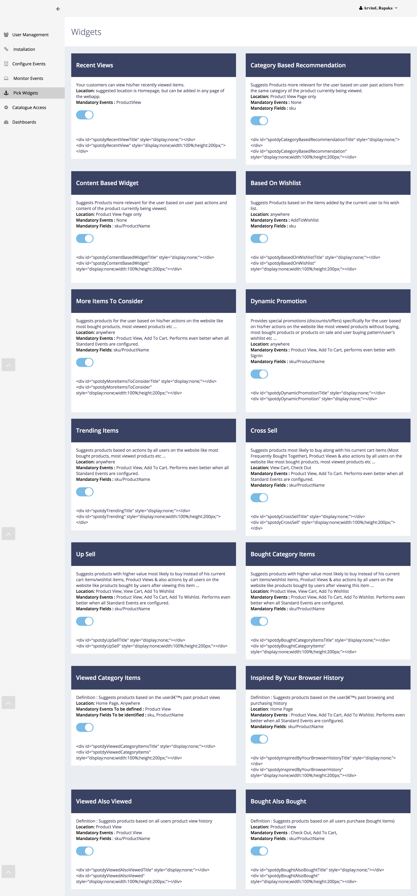
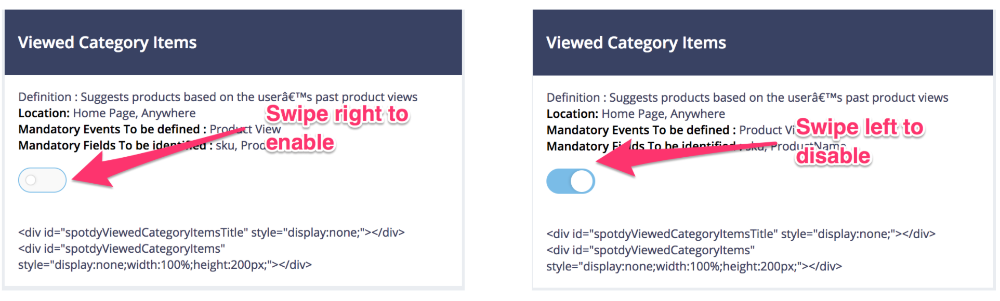

Widgets¶
eComtics unlocks the potential of marketing and enables eCommerce companies to develop meaningful customer relationships that drive revenue. With eComtics, eCommerce companies can maximize customer lifetime value by enabling marketers to fully know their customers and respond to them in real time. eComtics powers the best commerce experiences. Enable the best customer experience and Increase your revenue. The best thing about the eComtics platform is you don’t have to write a single line of code. Our machine learning and Widgets will power all the smartness - Sit back and enjoy.
What are Widgets¶
The quickest and easiest way to address the most pressing concern (providing your customers with seamless checkout processes) is through the use of e-commerce widgets. you will have to do a widget activation and pick the widgets based on priority, you will find the section under the column eComtics- widgets

Activating Widgets¶
